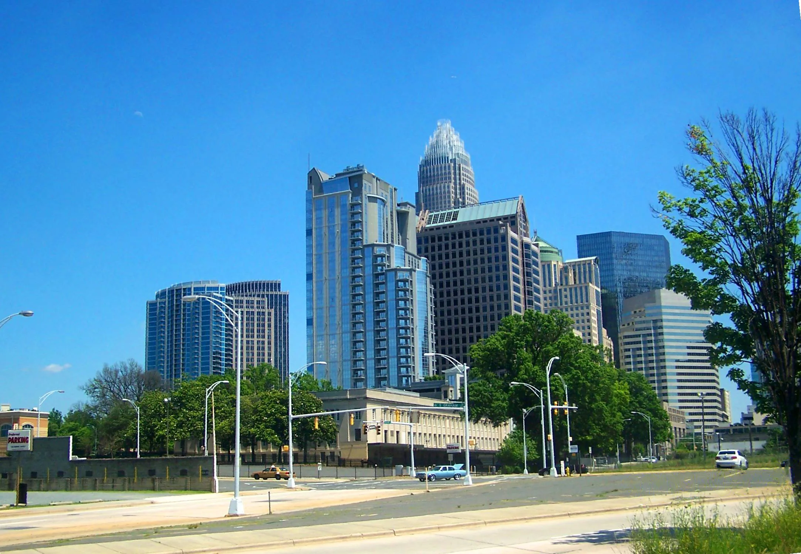
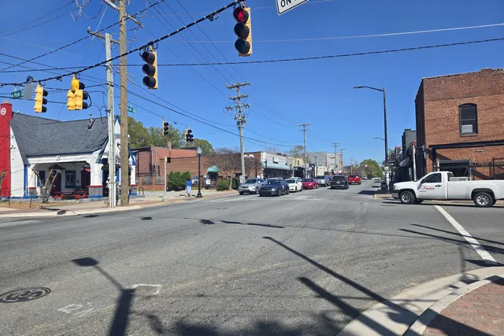
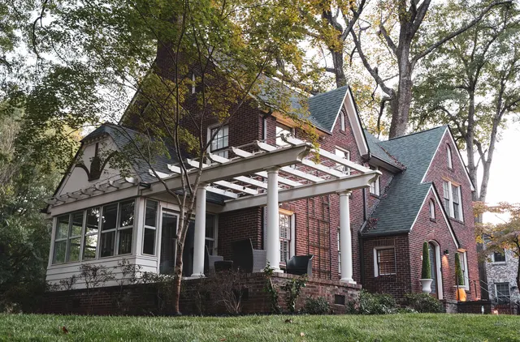
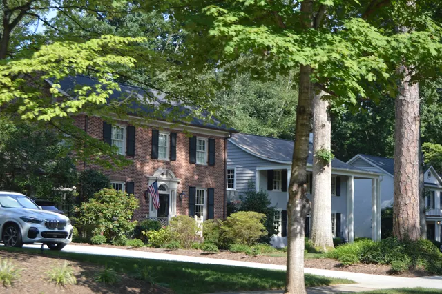
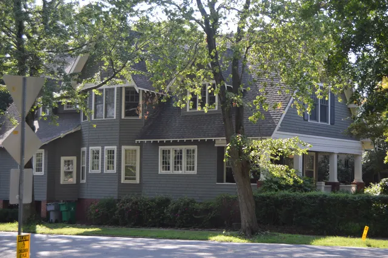
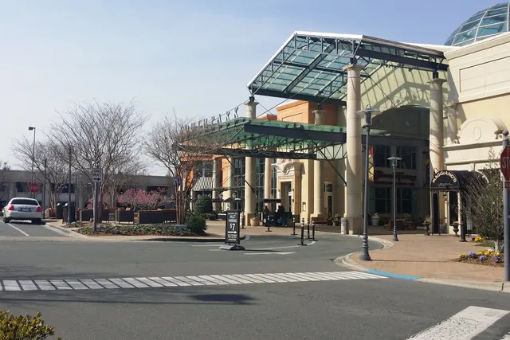
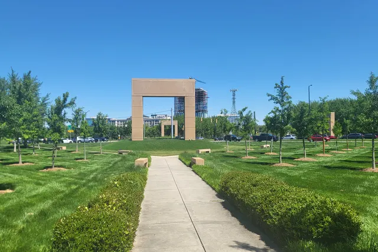
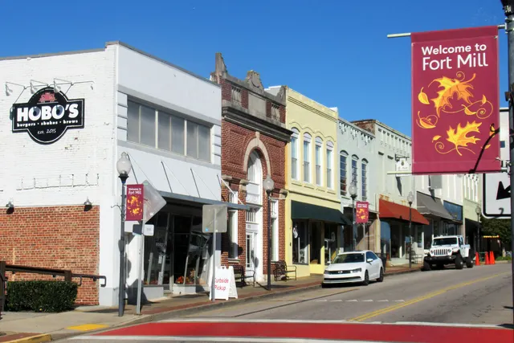
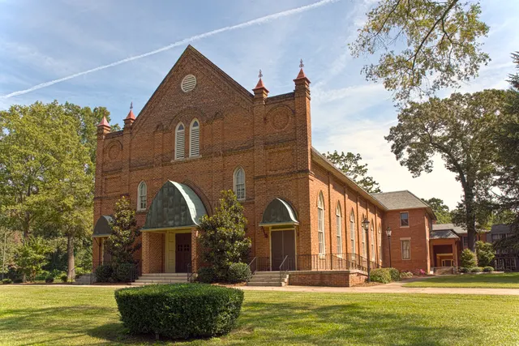

Uptown packs most of Charlotte's museums, theaters, and major-league venues into a few walkable blocks around Trade and Tryon Streets.
Local favorites

Our original guides to Charlotte life, where to eat, play and get outside, with a direct path to homes nearby.
Uptown packs most of Charlotte's museums, theaters, and major-league venues into a few walkable blocks around Trade and Tryon Streets.
Local favorites
South End grew up along the rail line southwest of Uptown, and today the Charlotte Rail Trail and LYNX Blue Line tie the whole district together.
Local favorites
NoDa is Charlotte's arts district, set in the old North Charlotte mill village along North Davidson Street.
Local favorites

Neighborhood guidesPlaza MidwoodPlaza Midwood's Central Avenue corridor is known for independent restaurants, bars, vintage shops, and music venues, all within a mile or so of Uptown.
Local favorites

Neighborhood guidesDilworthDilworth, Charlotte's first streetcar suburb, pairs historic bungalow-lined streets with easy access to some of the city's best outdoor spaces.
Local favorites

Neighborhood guidesMyers ParkMyers Park is known for its oak-canopied streets, and many of its best destinations are green ones.
Local favorites

Neighborhood guidesElizabethElizabeth is one of Charlotte's oldest in-town neighborhoods, and its streetcar heritage lives on with the CityLYNX Gold Line along Elizabeth Avenue and Hawthorne Lane.
Local favorites

Neighborhood guidesSouthParkSouthPark is Charlotte's best-known shopping district, centered on SouthPark Mall, which opened in 1970.
Local favorites

Neighborhood guidesBallantyneBallantyne and the surrounding south Charlotte communities offer greenway trails, walkable mixed-use villages, and plenty of shopping.
Local favorites
Lake Norman is the Charlotte region's biggest playground, with more than 500 miles of shoreline spread across four counties.
Local favorites
Concord is best known for racing and retail.
Local favorites

Town guidesFort MillFort Mill, just across the South Carolina line, combines a small historic downtown with big regional attractions.
Local favorites

Neighborhood guidesSteele CreekSteele Creek, in southwest Charlotte, is close to the airport, Lake Wylie, and some of the region's best-known attractions.
Local favorites
University City, in northeast Charlotte, is home to UNC Charlotte and one of the region's largest concert venues.
Local favorites
Belmont, in Gaston County just west of Charlotte, is a small city with a historic downtown and easy access to some of the region's best outdoor destinations.
Local favorites
Huntersville, in north Mecklenburg, sits between Charlotte and Lake Norman.
Local favorites
Long-standing local spots, each linked to its official site and to the homes around it.
Set on a large wooded campus beside the Catawba River in west Charlotte, the Whitewater Center is a nonprofit outdoor facility built around a man-made whitewater river. Visitors come for…
5000 Whitewater Center Pkwy, Charlotte, NC 28214Homes for sale in Mountain Island →Freedom Park is one of Charlotte's most popular parks, sitting between Dilworth and Myers Park along Little Sugar Creek. Its centerpiece is a pond with a loop path, surrounded by ball…
Homes for sale in Myers Park →The Little Sugar Creek Greenway is a paved trail that follows its namesake creek from near Uptown through Midtown, Freedom Park, and south Charlotte. Restored stream banks, bridges, and…
Homes for sale in Myers Park →The Charlotte Rail Trail is a walking and biking path that runs beside the LYNX Blue Line through South End and toward Uptown. Lined with public art, seating, and pocket parks, it connects…
Homes for sale in South End →Romare Bearden Park is a landscaped Uptown park in Third Ward named for the Charlotte-born artist Romare Bearden. Its gardens, lawns, and water features were inspired by his work, and the…
Homes for sale in Third Ward →First Ward Park is a green space in Uptown's First Ward, surrounded by apartments, offices, and the University of North Carolina at Charlotte's Uptown building. The park has a large lawn, a…
Homes for sale in First Ward →Independence Park in Elizabeth is Charlotte's first public park, dating to the early 20th century. It has shaded lawns, a rose garden, playgrounds, and walking paths, and it sits beside the…
Homes for sale in Elizabeth →Wing Haven is a walled garden and bird sanctuary in Myers Park, created by Elizabeth and Edwin Clarkson beginning in the 1920s. Its brick paths, fountains, and formal and wild plantings…
Homes for sale in Myers Park →Daniel Stowe Botanical Garden is a large botanical garden near Lake Wylie in Gaston County, just outside Belmont. It features themed gardens, fountains, a glass conservatory with orchids and…
Homes for sale in Belmont →Lake Norman State Park sits on the northern shore of Lake Norman in Iredell County, near Troutman and Mooresville. It offers a swimming beach, boat launch, campgrounds, picnic areas, and a…
Homes for sale in Mooresville →Crowders Mountain State Park, west of Gastonia, protects two rocky peaks, Crowders Mountain and Kings Pinnacle, that rise sharply above the surrounding Piedmont. Hiking trails lead to rocky…
Homes for sale in Gastonia →McDowell Nature Preserve is a Mecklenburg County nature preserve on the shores of Lake Wylie in the Steele Creek area. It offers hiking trails through hardwood forests, a nature center,…
Homes for sale in Steele Creek →The Anne Springs Close Greenway is a privately owned nature preserve in Fort Mill, South Carolina, covering a large expanse of forests, fields, and lakes. It offers miles of trails for…
Homes for sale in Fort Mill →Latta Nature Preserve is a large county preserve along Mountain Island Lake in Huntersville. It offers trails for hiking, biking, and horseback riding, an equestrian center, and a canoe and…
Homes for sale in Huntersville →Reedy Creek Nature Preserve and Park in northeast Charlotte combines a busy park with ball fields and a dog park with a quieter preserve of hardwood forest, streams, and ponds. Trails wind…
Homes for sale in Bradfield Farms →McAlpine Creek Park in southeast Charlotte is a hub of the McAlpine Creek Greenway. It has a cross-country course used for high school and college meets, a dog park, soccer fields, and a…
Homes for sale in Idlewild →Jetton Park is a Mecklenburg County park on a peninsula in Lake Norman in Cornelius. It offers paved walking and biking paths along the shoreline, picnic shelters, tennis courts, and a small…
Homes for sale in Cornelius →Colonel Francis J. Beatty Park is a large Mecklenburg County park in the Matthews area, off Providence Road near the Union County line. It has a lake for fishing and paddling, trails,…
Homes for sale in Matthews →Sherman Branch Nature Preserve in east Charlotte is known for its mountain biking trails, which are among the most popular in the Charlotte area. Trails wind through forests and along…
Homes for sale in Bradfield Farms →The Four Mile Creek Greenway is a paved trail in south Charlotte that follows Four Mile Creek through the Ballantyne and Piper Glen areas. It offers wooded scenery, bridges, and access…
Homes for sale in Ballantyne →Frank Liske Park is a large Cabarrus County park near Concord. It offers soccer fields, ball fields, a lake, picnic shelters, playgrounds, and walking trails. The park hosts youth sports…
Homes for sale in Concord →Cane Creek Park is a large Union County park south of Waxhaw, built around a lake popular for fishing, kayaking, and paddleboarding. It offers trails for hiking and mountain biking,…
Homes for sale in Waxhaw →Place details are linked to official sources. Hours, menus and events change. Check the venue before visiting. Search Charlotte is not affiliated with the places listed.